Meet the Research Team
One of my favorite parts about acaedmia is mentoring undergraduate students, and watching them learn and thrive in a research environment. My completed and on-going projects would not be possible without the dedicated, driven undergraduate students I am lucky enough to work alongside with.

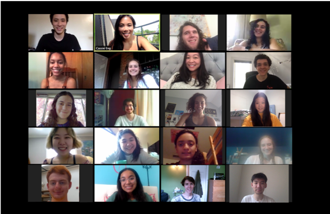
Dominic Calkosz
- Major in Computer Science and Minor in Game Design
- Github: @Dmcdominic
- Hobbies: Games, Music
Kalpa Anjur
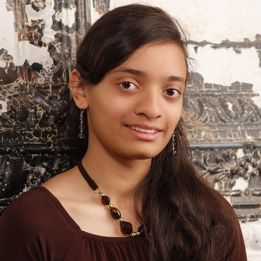- Major in Computer Science
- Github: @hitechlife
- Hobbies: Percussion, Games, Webtoons
Morgan Boyd
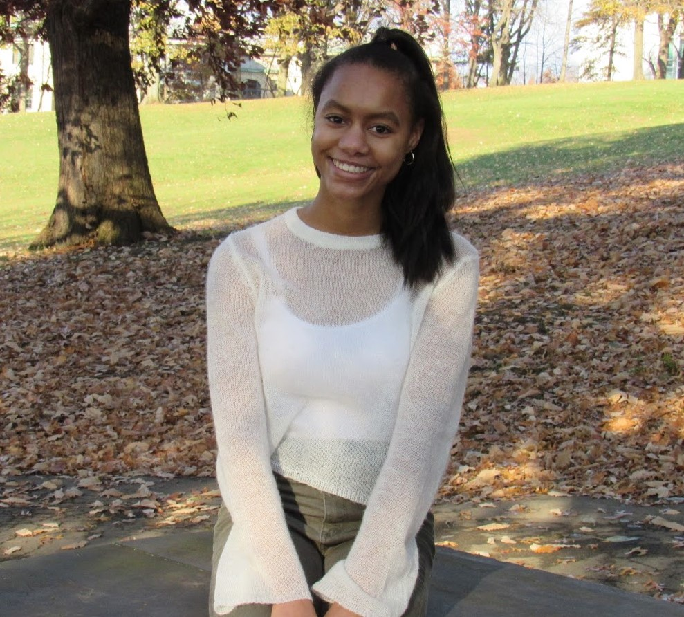- Dual Major in Psychology and Cognitive Neuroscience
- Hobbies: Dancing, Playing the Piano, and Taking Long Walks
Maanasi Bulusu
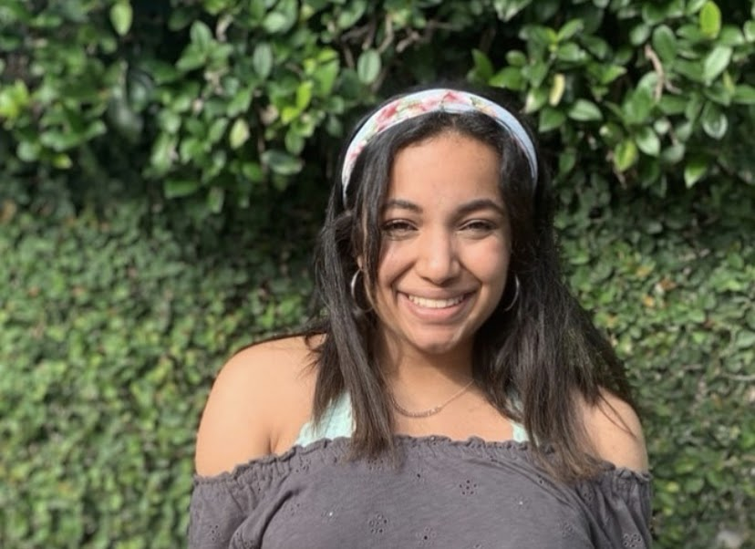- Major in Computational Neuroscience and Minor in Computer Science
- Hobbies: Reading, Painting, Exploring Netflix, and Volunteering
Adrian Mester
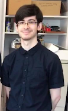- Dual Major in Computer Science and Music Technology
- Github: @RedHippi
- Hobbies: Bird Watching in local parks, Playing Games with his parents
Suanna Moron
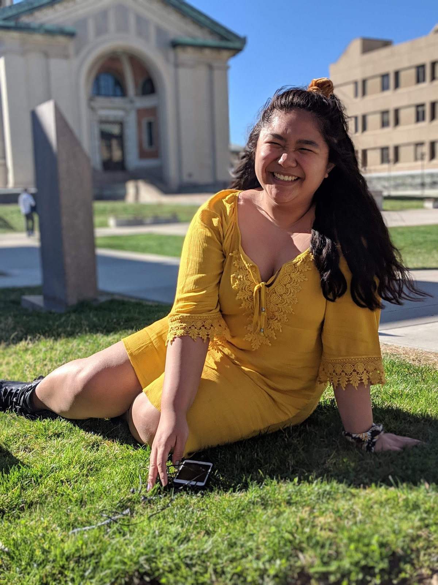- Dual Major in Computational Neuroscience and Psychology
- Hobbies: Baking, Reading, Dancing, and Volunteering
Kristy Zhang
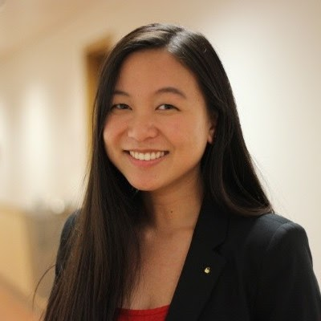- Dual Major in Business Administration and Human-Computer Interaction
- Hobbies: Playing Mahjong, Singing
Olivia Brand
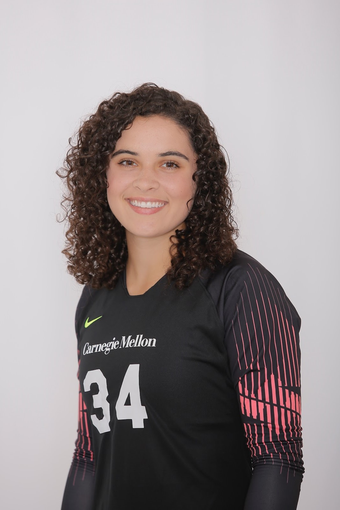- Major in Biological Sciences
- Hobbies: Playing for Carnegie Mellon Women's Soccer Team, Horseback Riding
Sebastian Yang
- Duel Major in Information Systems, Statistics and Machine Learning; Minor in Business Administration
- Website: yukaiyang.com
- Github: @SCP650
- Hobbies: Playing Videogames
Kaitlynn Cooper
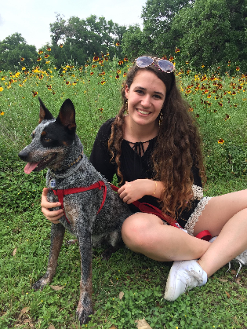- Major in Biological Sciences with a concentration in Psychology
- Hobbies: Playing Volleyball, Hiking with her Dog
Marissa McAfee
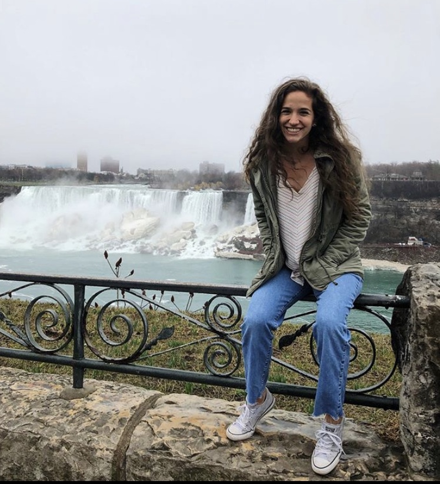- Major in Chemistry
- Hobbies: Painting, Hiking, Exploring New Places, Reading, Playing for Carnegie Mellon Women's Soccer Team
Eileen Lee
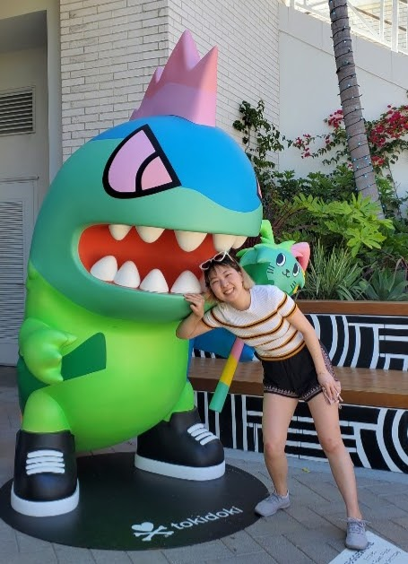- Triple Major in Art, Psychology, and Human-Computer Interaction
- Website: @eileenlee
- Hobbies: Drawing, Painting, Cooking, and Volunteering in the community
Elizabeth Fulton
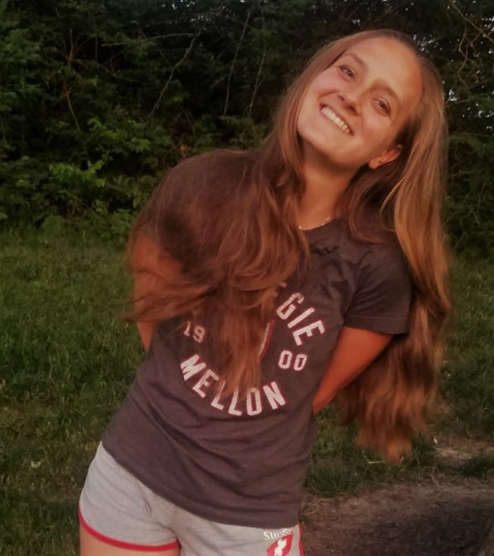- Major in Computational Neuroscience
- Hobbies: Reading, Playing Basketball, Soccer, and Kickball
Emma Hu
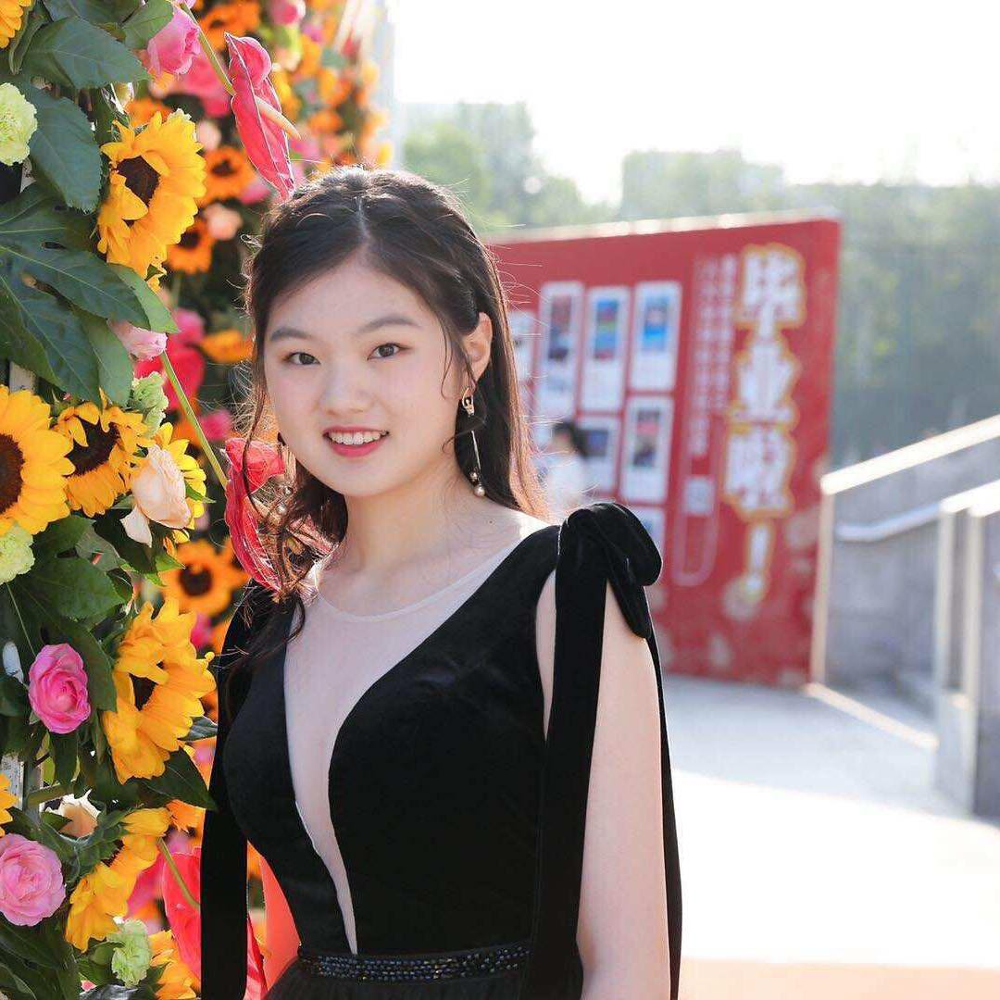- Major in Mathematical Sciences
- Hobbies: Bridge, Dancing, and Traveling
George Whitfield
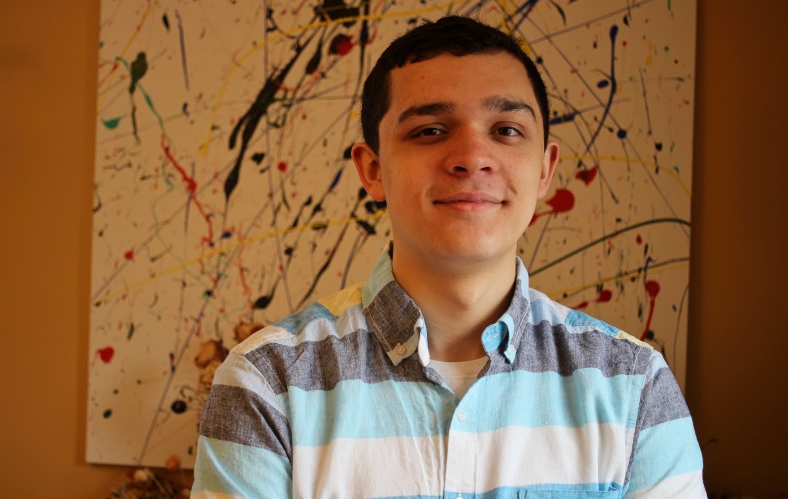- Major in Electrical and Computer Engineering and Game Design
- Hobbies: Piano, Crochet, Hanging with friends, Origami
Where are they now?
Emery Noll
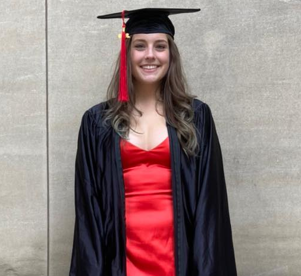- Emery graduated with a dual major in Biological Sciences and Pyschology.
- She was accepted into The Master of Science in Medical Sciences Program at Boston University on her journey to start Medical School.
Carter Williams
- Carter graduated with a major in Logic and Computation and a minor in Game Design.
- Github: @gantar22
- He currently works as a Game Engineer at Filament Games, an industry-leading educational game developer company.
Marie Shaw
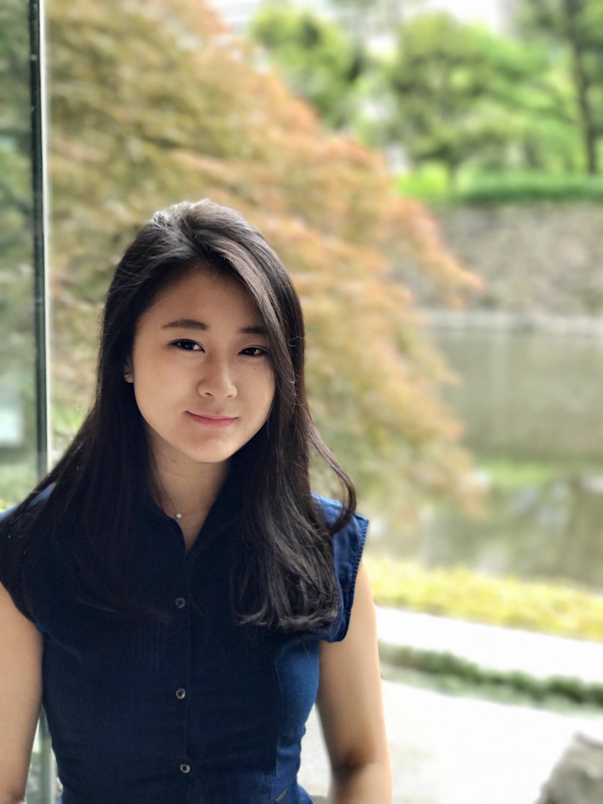- Marie graduated with a dual major in Electrical Computer Engineering and Human Computer Interaction with a minor in Integrative Design, Arts and Technology.
- Github: @mnshaw
- She currently works at YouTube in California.
Xavier Artache
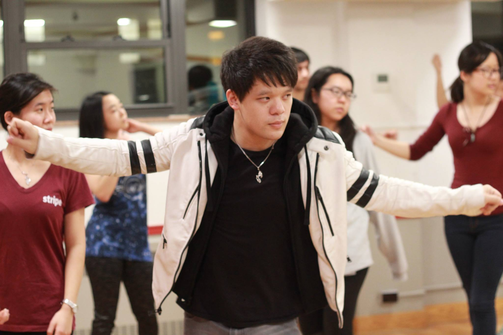- Xavier graduated with a dual major in Mechanical Engineering and Computer Science with a dual minor in Business and Robotics.
- Github: @xaxafour
- He currently works at the startup AutoX in California, which programs self-driving vehicles.
Nicole Ang
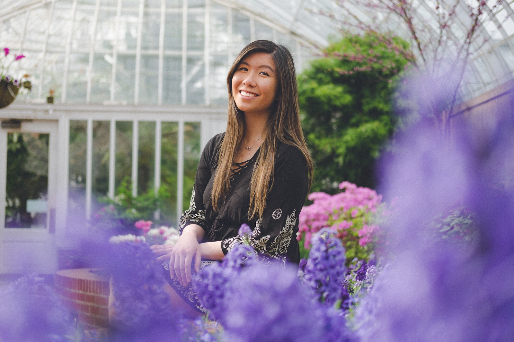- Nicole graduated with a dual major in Statistics and Machine Learning and Information Systems.
- Github: @nicoleang
- She currently works at Amazon in Seattle as a Software Development Engineer.
Nick Lee
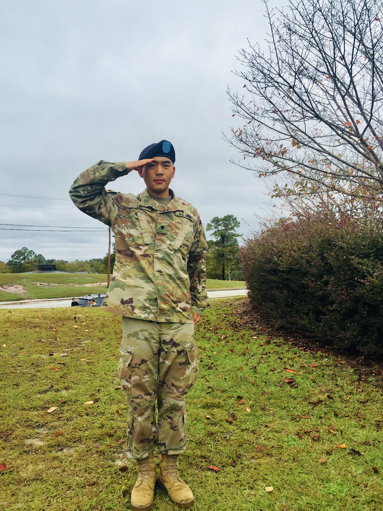- Nick graduated with a major in Electrical and Computer Engineering
- Github: @tabbyson
- He currently works as a Power Generator Engineer in Virginia.
Bridget Tan
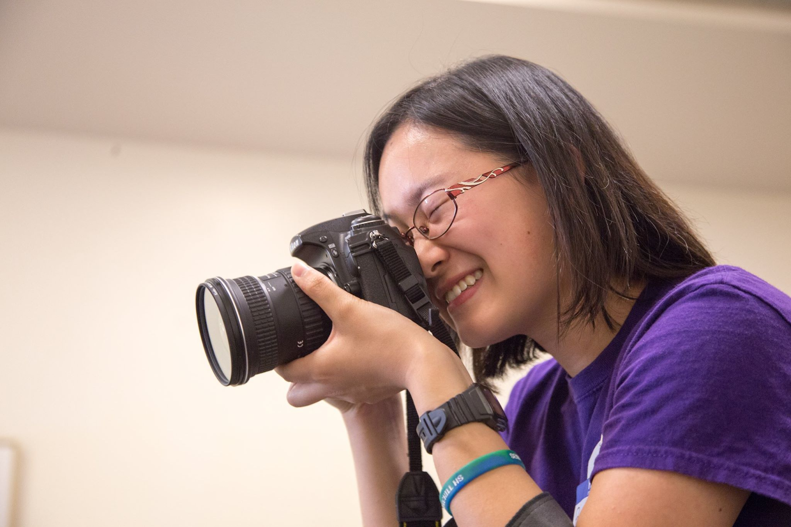- Bridget graduated with a major in Electrical and Computer Engineering and a minor in Sound Design
- Github: @japanda3
- She was accepted into Carnegie Mellon's Master's of Science Electrical and Computer Engineering Graduate Program.
Melissa Pocsai
- Melissa graduated with a B.S. in Psychology from University of Pittsburgh
- She was accepted into The City University of New York’s Clinical Psychology Ph.D. Program.